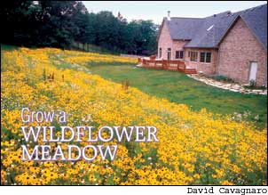
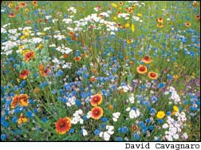
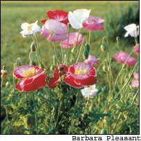
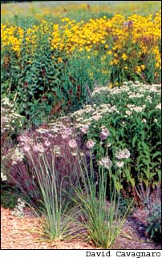
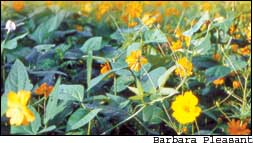

Enjoy lots of color, less mowing and more wildlife in your back yard
When you care for a piece of land, you want to do the right thing by it. Whether your land is measured in square feet or acres, one very right option is to deck it out with wildflowers - low-maintenance bloomers that look beautiful, support wildlife and are willing to accept what your site and soil have to offer.
I’ve been tinkering with wildflowers for years, enjoying my successes and learning from my failures. These days, my goal is to establish truly sustainable plantings composed of native perennials - beautiful plant communities that can be maintained with once-a-year mowing. There are many ways to plant a wildflower meadow, and each is infinitely more interesting than mowing a lawn or bush hogging a field. And beyond being beautiful, wildflowers have the power to nourish the land.
“When you push a lawn back to habitat, you will quickly see the animals return,” says Mark Simmons, an ecologist at the Lady Bird Johnson Wildflower Center. “All kinds of creatures will colonize quickly, because you’re providing food and habitat for birds, animals and insects.”
To keep things simple, we’ll look at two likely starting places for wildflower meadows - an area of lawn in a typical home landscape and a section of open field about a half acre in size From Lawn to Wildflowers.
The site I’m working now was a slightly weedy zoysia lawn two years ago. I think it needs another year of work before it’s ready to support native perennials, which tend to be slow-growing plants that compete poorly with weeds that thrive in disturbed lawn or garden soils. Meanwhile, the plot is supporting a succession of annual wildflowers, few of which are native species. In a transition site, this is not a bad thing. Last fall, migrating monarchs paused to sip nectar from the sulphur cosmos I planted after I stripped off the sod, tilled the soil and dug in 3 inches of rotted horse manure. I dug and amended the site again in winter, then planted a mixture of colorful species adapted to my area. In late spring, honeybees busily worked the poppies, and a few weeks later, goldfinches showed up to dine on ripe bachelor button seeds
These and other non-native, annual wildflowers (the same category used for most highway plantings) provide lots of color, and many of them reseed pretty well, even when the soil is dug, amended and replanted with additional species. Many “meadow in a can” labels advise against cultivating the soil before planting because it can increase weed problems, but I have found that sites switched from lawn to wildflowers benefit from the same methods used to cultivate a garden: amending the soil with organic matter to improve its texture and drainage, and at least two seasons of dedicated weeding to deplete the soil’s “weed seed bank.” Later on, when I make the switch to perennials, the annuals will gradually disappear as the perennials take over
With perennial wildflowers, it’s wise to stick exclusively with natives, which will become the permanent anchor plants in your wildflower meadow and will slowly elbow out more short-lived annuals.
“Native plants are best for native critters, but beyond that is the fact that native plants are adapted to the local soil and environmental conditions. So, they don’t need additional water and fertilizer,” says Donna VanBuecken, executive director of Wild Ones (www.for-wild.org), a national organization that promotes landscaping practices that preserve or restore native plant communities. “If your objective is to heal the Earth, then the goal is to build a biodiversified native community that includes plants, insects, butterflies and other wildlife.”
You can buy perennial plants from a native plant nursery or grow your own, which is a fun project in itself. Two methods work especially well: sowing seeds in a specially prepared nursery bed in the fall, and rooting stem-tip cuttings taken from established plants in the spring. A third option is to adopt plants rescued from places being cleared for new construction - a tactic VanBuecken uses. Organized plant rescues also are conducted by numerous native plant societies, which now exist in almost every state. If you’re rescuing on your own, always get permission from the landowner first, and dig plants in the morning so you can spend the afternoon transplanting them into the ground
In addition to blooming wildflowers, a sustainable perennial meadow should also include grasses. The best ones are native warm-season bunch grasses or sedges that stabilize the site and make great neighbors for perennial wildflowers. “There seems to be a symbiotic relationship between grasses and flowers,” says Alan Wade, who has worked with Midwestern native plants at Minnesota-based Prairie Moon Nursery for 22 years. “Grasses alone can fail after 10 years or so, and flowers by themselves usually have a lot of weeds.” In terms of planning, it’s best to shoot for an equal mix of grasses and flowers, allowing some leeway for preferences your site may reveal to you over time
I wait until I begin plugging in perennials to establish grasses. With few exceptions, seeds of warm-season bunch grasses, such as little bluestem, germinate best when planted directly into the soil in spring. Spring also is an excellent season to transplant egg-sized plugs of grass cut from wild stands with a sharp knife. Once you know what to look for finding donor swaths of native grasses is pretty easy
After the little perennials and grasses are in place comes a season of hand weeding. By this time, you’ll start recognizing both the weeds in the site and the plants you want to grow. To minimize disturbance to young wildflowers and grasses, pull weeds when the soil is wet, and get them while they’re small.
From this point on, you can maintain your little meadow by cutting it down once a year with a weed trimmer, or you can use loppers to nip out individual plants as they fail and stockpile the debris. I like to clean out the debris, because neatness counts in my meadow. As space opens up in winter, chop through the pile of withered plants and return them to the site as mulch. Then wait until early spring to mow so the plot can provide shelter and habitat for birds and other small critters through the winter.
• “Create several little meadows as opposed to one big one. “Most yards are filled with soil brought in from different places, so it’s possible that plants that do poorly in one area may thrive in another. Later on, when the plants seed out, they will relocate where they want to grow.” - Donna VanBuecken, Wild Ones
• “While sowing seed, cover a few places with pieces of carpet or tarp. Later on, you can use these unsown places as weed indicators. Plants that match those in the weed indicator plots are weeds, not the wildflowers you sowed.”
- Alan Wade, Prairie Moon Nursery
• “Dominant species will change over the years. Celebrate the changes and the diversity, but don’t be afraid to edit as needed.”
- Cheryl Lowe, New England Wild Flower Society
• “Become sensitive to your site. Watch it for a year, mow it from time to time, and see what happens. You may be pleasantly surprised.”
- Mark Simmons, Lady Bird Johnson Wildflower Center
In some fortunate situations, the land already hosts a good basic population of meadow plants - like a thin stand of native bunch grasses and wildflowers - so the main task is hoeing out weeds and replacing them with a diversified guild of native plants. Keith Bowers, president and founder of Biohabitats, a Maryland-based firm that restores dry and wetland landscapes across the country, tells of one such site where his team plugged in a few plants and added bird feeders and perches, so that birds would bring in seeds from adjoining land with good stands of desirable wildflowers.
I was not so lucky when I wanted to create a wildflower meadow in an abandoned field. My land was covered with tall fescue, a grass too big and rowdy to share quarters with wildflowers. Not wanting to use herbicides, I hitched the disc onto the tractor and shredded the stuff to bits. Then I sowed corn poppies, envisioning a beautiful field of flowers the following spring. It didn’t work. The soil was too poor to support the flowers, and the fescue came back with a vengeance.
Not willing to give up, the next fall I planted a soil-building cover crop, crimson clover, mixed with bachelor button seeds. The planting made a great show in spring, but I was still seeing quite a bit of fescue. After a few more drags of the disc, I sowed a smother crop of sulphur cosmos mixed with nitrogen-fixing crowder peas. The land liked this regimen so well that I repeated it for another year. By then, the fescue was gone, and I was able to begin planting native wildflowers
I used the “kitchen-sink” approach, throwing in seeds of everything I thought might work. I also dug in asters, goldenrods, broomsedge and other natives I found elsewhere on my property and plunked them down in the meadow. I had to sell the place while the meadow was still a work in progress, but after three years of interesting effort, it was coming along quite nicely
Fall-sown cover crops rarely winterkill in Zone 7 (average minimum winter temperatures between zero and 10 degrees), but in climates where they do, they offer an excellent way to prepare a field for wildflowers. Oats work great for this purpose, and the dead plants can be left in place as a weed-suppressing mulch. If the site needs more work to control invasive species, plant it with buckwheat in summer. When preparing space for a restored prairie (the Midwest’s version of a native wildflower meadow), Wade often spends two years on site preparation before sowing seed or plugging in plants. “Weed competition is the main reason new meadows fail,” he says
The best times to plant seed are spring and fall, and each season has advantages. Wildflower seeds often do best when seeded in the fall, while warm-season grasses germinate best when sown in spring. On the other hand, weed competition is greater in spring, less in fall. The choice is yours
In both seasons, Bowers says good seeding technique is important. “Except for some cool-season grasses, the seeds don’t germinate well unless they are buried beneath a quarter inch of soil.” You can press the seeds in place with a roller, or do it using human power by walking over the seeded area while tamping around with the backside of a shovel
Whether you use seeds or plants (marked with sticks or plant labels), the main task the first season after planting is mowing. Mow the infant meadow every three weeks or so at a height of 4 to 8 inches. You can use your lawn mower if the blade can be set as high as 4 inches, or you can use a string trimmer. Evenness of cut is not as important as regularly topping back the plants, which will include those you planted as well as numerous weeds. Mowing keeps the weeds from setting seeds, encourages the flowers and grasses to stay low, developing roots and crowns, and keeps enough light coming through to coax slow-sprouting seeds to life. Limit weeding to battles with superweeds such as bindweed or Canada thistle, which should be sliced off at ground level with a sharp knife.on’t pull them, which will disturb little seedlings while dragging more weed seeds to the surface.
In the second year, management of a wildflower meadow involves weeding, weeding and then more weeding. You won’t disturb the soil if you use a pair of pruning shears to cut weeds off at ground level. Switch to a knife to cut around the base of big, woody weeds. For tap-rooted weeds such as dandelion or dock, use a fishtail weeder, also called a dandelion fork.
In its third season, weeding a wildflower meadow of any size becomes much more casual, and you won’t need to mow until fall. “A regular lawn mower won’t work. You’ll need a weed trimmer with a blade attachment,” Wade says. Or, you can go low-tech with a swing blade or machete. Be prepared to encounter stems as much as an inch in diameter and chop down everything to about 4 inches. The main reason to mow a young meadow in the fall is to disperse seed over a wide area, which is an easy way to support the reseeding process naturally. After four or five years, you can switch to spring mowing, which preserves wildlife habitat through winter and allows you to enjoy the show as wind riffles through dried grass, birds snap up seeds and snow turns plant skeletons into white sculptures
It is also good to burn a mature meadow in early spring, though other considerations - such as safety and air quality - make mowing more practical for most people. As for the debris that accumulates when you mow, you can gather it up or let it lay. Tallgrass prairies or wetland meadows may produce so much debris that it will smother little plants, but meadows composed of low-growing species don’t usually need to be raked after mowing
By this time, your meadow may make suggestions for refinement. “Dominant species will change over the years. Celebrate the changes and the diversity, but don’t be afraid to edit as needed” says Cheryl Lowe, horticulture director at the New England Wild Flower Society’s Garden in the Woods in Framingham, Mass. Maybe you’ll want to increase populations of some plants (hint: root some stem-tip cuttings), or get rid of some you don’t like. “Once you put a meadow in, the process doesn’t end,” Bowers says. “That’s where it begins.” You consider what you have, think about where you want to go, and little by little, you get there. Look around you. Nature works this way all the time.
What plants should you put in your wildflower meadow? Instead of using the pictures on a package of wildflower seeds as your vision, get familiar with natural wildflower meadows in your area. Keith Bowers of Biohabitats calls these “reference ecosystems,” and he thinks they offer the best possible lessons in learning to read your land and its latent possibilities. Alan Wade of Prairie Moon Nursery agrees completely. “Look for local, natural landscaping groups and get advice from other people in your area. Contact the Nature Conservancy to find out about local natural areas you can visit,” Wade advises. Take along a good wildflower field guide, such as those published by Knopf for the National Audubon Society. The more wildflower meadows you actually experience, the more inspired you will be to proceed thoughtfully with your own.
You can find local sources of native wildflowers and grasses through local native plant societies, or through the supplier database maintained by the Lady Bird Johnson Wildflower Center. Go to the Web site at www.wildflower.org, click “Explore Plants,” then “Suppliers Directory.” From there, you can search by state, region or by site criteria. Suppliers range from large companies to people who sell seeds collected from their own land. A close match between the source of seeds or plants and their permanent home is ideal, and it’s always best to plant seed soon after it has been harvested. Another place to check is your local office of the U.S.epartment of Agriculture’s Natural Resources Conservation Service (NRCS; there is an office in every county). Sometimes local organizations work with NRCS to make free wildflower seeds available to help citizens do their part to improve various types of wildlife habitats
To learn more about wildflowers and grasses native to your area, the following regional companies (and many more) maintain Web sites that feature extensive information about native wildflowers and grasses (most with great photos).
Ernst Conservation Seeds, Meadville, Pa.; (800) 873-3321; www.ernstseed.com
Native American Seed, Junction, Texas; (800) 728-4043; www.seedsource.com
Plants of the Southwest, Santa Fe, N.M.; (800) 788-7333; www.plantsofthesouthwest.com
Plants of the Wild, Tekoa, Wash.; (509) 284-2848; www.plantsofthewild.com
Prairie Moon Nursery, Winona, Minn.; (866) 417-8156; www.prairiemoon.com
Shooting Star Nursery, Frankfort, Ky.; (502) 867-7979; www.shootingstarnursery.com
Western Native Seed, Coaldale, Colo.; (719) 942-3935; www.westernnativeseed.com
Wildflower Farm, Coldwater, Ontario; (866) 476-9453; www.wildflowerfarm.com
Wildseed Farms, Fredericksburg, Texas; (800) 848-0078; www.wildseedfarms.com
|
 Black-eyed Susans make a great show in this first- year wildflower planting. |
 This ground has been planted with a ?lawn substitute? seed mix. |
 |
|
 |
 |
|